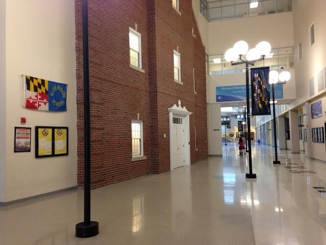

About Me
My name is George Tong. I am currently a junior at University of Maryland College Park
studying Computer Engineering. I'm a pretty simple guy - I can either be
found coding, cooking/eating, or exercising! Right now, I am looking
for a summer 2018 internship.
My Experiences
Zynga
Software Engineering Intern | Summer 2017
I am currently working on fun social games!

Terrapin Freelancers
Co-Founder/President | 2016-2017
After another three day hackathon left me too tired to focus
in class for the rest of the week, I decided hackathons just weren't
for me. However, I still loved working on programming projects
in a team environment, and so started Terrapin Freelancers, an
organization focused on providing technical solutions. It has
been such an adventure, giving me the opportunity to work on projects
ranging from personal website consultation to full lifecycle mobile app
development. Along the way, I learned importance of communication,
organization, and flexibility in being a leader.
Adelphi Army Research Lab
Software Engineering Intern | Summer 2016
At ARL, I was tasked with developing a data visualization web app
for a team of low level engineers. The lack of mentor to lean on
gave me the opportunity to practice independent thinking, exercise rigorous
research skills, and overcome my fear of looking at open source code on
Github. At the same time, I gained the ability to receive high level
feature specs and independently plan the underlying technical details.
University of Maryland College Park
B.S. Computer Engineering | Graduation in May 2019
They say college is the best four years of your life. UMD has certainly
lived up to this high bar, giving me the opportunity to meet life long
friends, expand my worldview, and get a lot better at Super Smash Bros Melee.
My rigorous Electrical Engineering Classes give me a solid understanding
of the underlying components of a computer, which in the end give me more of an
appreciation for the concepts and techniques I learn in my Computer Science
classes. UMD has given me the tools and support I need to launch my professional career,
and is one of the best decisions of my life.

Richard Montgomery High School
International Baccalaureate Diploma | Received May 2015
The Richard Montgomery IB Program is an experience I strongly believe
everyone should go through. The variety of ideas and cultures of the
students in the program made me understand the importance of diversity
and gave me the empathy to consider all perspectives. The rigorous academic
curriculum itself taught me time management, perseverance, and, above all,
the ability to think for myself.
My Projects
Video Classification Tool
Ongoing
Currently, I am developing a tool that uses Convolutional Neural
Networks to identify clips of specific people in
videos using Python, Google TensorFlow, and OpenCV3.
Bitcamp Android/iOS App and Website
2016-2017
I spearheaded a team that built the Bitcamp Android/iOS App,
implemented the Bitcamp website, and developed a new QR-Code
check in system. We used React Native for the mobile app to
allow for easy cross platform development and compatability. The app
allowed event organizers to push out real time notifications and
provided users with information about sponsors/prizes.
High Interaction Honeypots Research
2016
I worked on a semester long project designing honeypot systems with ssh
password vulnerabilities in order to study attack habits. I
created data collecting scripts (bash) and installed command
loggers in order to track what a hacker actually does in a compromised system.
OSV Terrain Showcase Competition 2nd Place
2016
I worked with a team of engineers to create a fully autonomous
Over Sand Vehicle that could travel to a specified location and
identify properties of obstacles. I led the effort to develop the Arduino
code that controlled the vehicle via sensors.
Northrop Grumman CyberEngineer Competition 2nd Place
2015
We created a Raspberry Pi based mailbox notification system. I, specifically,
designed and built the web app (Node.js, Expess.js, Azure, MongoDB, Twilio) that communicated with
the Raspberry Pi and sent text message notifications.
Icon credits to Gregor Cresnar and Ananth from The Noun Project